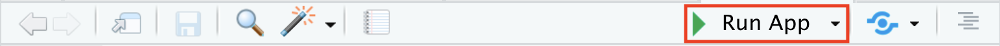

이 hands-on에서는 API 기능이 있는 간단한 Shiny Application을 만들고, 이를 shinyapp.io에 게시까지 진행합니다.
1단계 Shiny Application 프로젝트 만들기
RStudio/File 메뉴에서 New Project... 메뉴 선택
New Directory에 생성되도록 선택
Project type은 Shiny Application를 선택
상위폴더가 C:/Projects인지 확인 (=Global Options 사전 지정값)
Directory name은 R-4.4.1-Shiny_API_Application_Example로 지정
프로젝트 폴더에 app.R 파일이 생성되어 있으며, 열어보면 아래의 기본예제코드가 보입니다.
app.R
# This is a Shiny web application. You can run the application by clicking# the 'Run App' button above.## Find out more about building applications with Shiny here:## https://shiny.posit.co/#library(shiny)# Define UI for application that draws a histogramui <-fluidPage(# Application titletitlePanel("Old Faithful Geyser Data"),# Sidebar with a slider input for number of bins sidebarLayout(sidebarPanel(sliderInput("bins","Number of bins:",min =1,max =50,value =30) ),# Show a plot of the generated distributionmainPanel(plotOutput("distPlot") ) ))# Define server logic required to draw a histogramserver <-function(input, output) { output$distPlot <-renderPlot({# generate bins based on input$bins from ui.R x <- faithful[, 2] bins <-seq(min(x), max(x), length.out = input$bins +1)# draw the histogram with the specified number of binshist(x, breaks = bins, col ='darkgray', border ='white',xlab ='Waiting time to next eruption (in mins)',main ='Histogram of waiting times') })}# Run the application shinyApp(ui = ui, server = server)
?@fig-RunApp 에서 보이는 Run App 버튼을 틀릭하여 코드를 실행시켜보면 Output/Viewer pane에서 자신의 로컬컴퓨터 상에서 웹 어플리케이션이 실행되는 것을 확인할 수 있습니다.
 - 실행된 application의 왼쪽 사이드에 있는 Number of bins을 욺직이면 우측 히스토그램에서 x축 간격이 달라짐을 보실 수 있습니다.
Creat Shiny Application message box
R-4.4.1-Shiny_API_Application_Example
2단계 App.R 파일을 API 코드로 대체하기
건강보험심사평가원_진료행위정보서비스API 중 행위요양기관종별통계를 추출한 것입니다.
아래의 코드를 app.R 파일에 복사하여 붙여넣기 하시면 됩니다.
app.R
################################################################################## API data download################################################################################library(rjson)library(httr)# API 호출 정보 설정base_url <-"http://apis.data.go.kr/B551172/getDiagnosisRemoteCancerous"call_url <-"AllCancerRemoteOccurrenceTrend"method <-"GET"My_API_Key <-"wqdX2OnQY29zYQ7BXsGafDqVNaIbIYUoqAqS1bOeK6/yyqdukiVcRcj25wue+U8tqSaSXThVPwfaWDNpUc6cwQ=="# 요청 파라미터 설정params <-list(serviceKey = My_API_Key, # 실제 API 키로 변경pageNo =1,numOfRows =10,resultType ="json")# API 호출url <-paste0(base_url, "/", call_url)response <-GET(url, query = params)# 응답 상태 확인# if (http_status(response) == 200)if (status_code(response) ==200) {# JSON 데이터 파싱print(response)str(response)} else {print(paste("API 호출 실패:", status_code(response)))}json_text <-content(response, as ="text")print(json_text)print("------------------")data <-fromJSON(json_text)print(data)# 예시: 리스트 내부에 있는 항목을 추출하여 데이터프레임으로 변환data_list <- data$items # 적절한 필드로 접근# 데이터프레임으로 변환df <-as.data.frame(do.call(rbind, lapply(data_list, as.data.frame)))################################################################################## ShinyApp################################################################################library(shiny)library(ggplot2)# Define UI for the applicationui <-fluidPage(# Application titletitlePanel("API Data Vizualization with ShinyApp"),# Sidebar layoutsidebarLayout(sidebarPanel(# Dropdown to select Y axis variableselectInput("y_var", "Choose Y-axis Variable:", choices =c("TOTAL", "VALUE"),selected ="TOTAL") # Default to TOTAL ),# Main panel to display the plotmainPanel(plotOutput("yearPlot") ) ))# Define server logic to create the plot based on user selectionserver <-function(input, output) {# Render the plot output$yearPlot <-renderPlot({# Plot using the selected Y variableggplot(data = df, aes(x = YEAR, y = .data[[input$y_var]])) +geom_point() +labs(x ="Year", y = input$y_var) })}# Run the application shinyApp(ui = ui, server = server)
코드를 실행할 때에는 아래의 패키지들을 설치한 후 진행하셔야 합니다.
R Console pane
renv::install("rjson")
R Console pane
renv::install("httr")
R Console pane
renv::install("ggplot2")
실행을 하면 아래와 같은 화면이 나타납니다.
그림 1: API data visualization with ShinyApp
3단계 shinyapp.io 가입 및 계정 연결하기
가입에 필요한 정보는 아래와 같습니다. 저는 예시로 아래와 같이 사용하였습니다.
이메일 주소: rpythonmember@gmail.com
First Name: Member
Last Name: RPython
비밀번호: ????????
ACCOUNT SETUP이 나타나며 자신의 계정이름을 지정한다고 생각하시면 됩니다.
다른 사람의 계정이 일치하면 사용할 수 없습니다. 저는 예시로 rpythonmember로 지정하였습니다.
GETGTING STARTED 화면에서Start with R의 지시사항을 따라서
STEP 1 - INSTALL RSCONNECT
우리는 renv 패키지 독립관리를 사용하고 있으므로 아래와 같이 설치하시면 됩니다.
R Console
renv::install("rsconnect")
STEP 2 - Authorize Account
shinyapp.io에서 만들어지는 token과 secret를 Account name과 함께 아래와 같이 setting 하도록 합니다.
Publish 버튼을 클릭하면 shinyapp.io로 한참을 기다리면 publish가 되며 - browse가 클릭된 경우 자신의 web browse에 로딩이 되어 확인할 수 있습니다. - shinyapp.io에서는 Dashboard의 Application에 Running으로 확인할 수 있습니다.